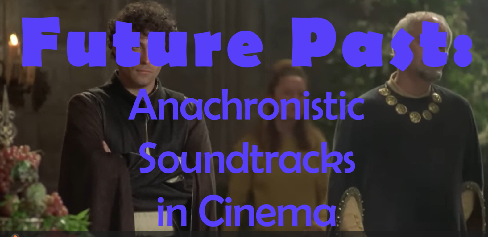

Future Past

Through visual diptychs and audiovisual analysis, this essay explores what happens when contemporary music is layered over period images — how the friction between then and now produces a sense of overlapping time, and what that anachronism reveals about how cinema constructs the past.
Viewing available upon request — email for access